太阳宫公园
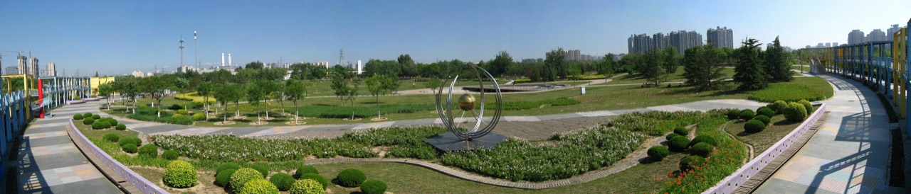
作品：太阳宫公园 - 中心广场绿地全景 - panoramio.jpg
摄影：Tiger@西北
拍摄日期（来源声明）：2009-06-12

2009年太阳宫公园历史影像，主体为中心广场绿地；不代表场所全貌、现行陈列、季节或开放状态。
由来源原图等比例缩小，并进行JPEG压缩（质量参数72）；未裁切、重绘、去人物或换背景。成品为1280×274。页面按容器缩放、裁显；完整原图见来源。
照片及机械处理结果沿用各自标注的许可。保留原构图，仅按下列说明缩小和压缩。历史影像不代表当前开放、展览或季节；摄影者不因此为小程序背书。

作品：太阳宫公园 - 中心广场绿地全景 - panoramio.jpg
摄影：Tiger@西北
拍摄日期（来源声明）：2009-06-12
2009年太阳宫公园历史影像，主体为中心广场绿地；不代表场所全貌、现行陈列、季节或开放状态。
由来源原图等比例缩小，并进行JPEG压缩（质量参数72）；未裁切、重绘、去人物或换背景。成品为1280×274。页面按容器缩放、裁显；完整原图见来源。
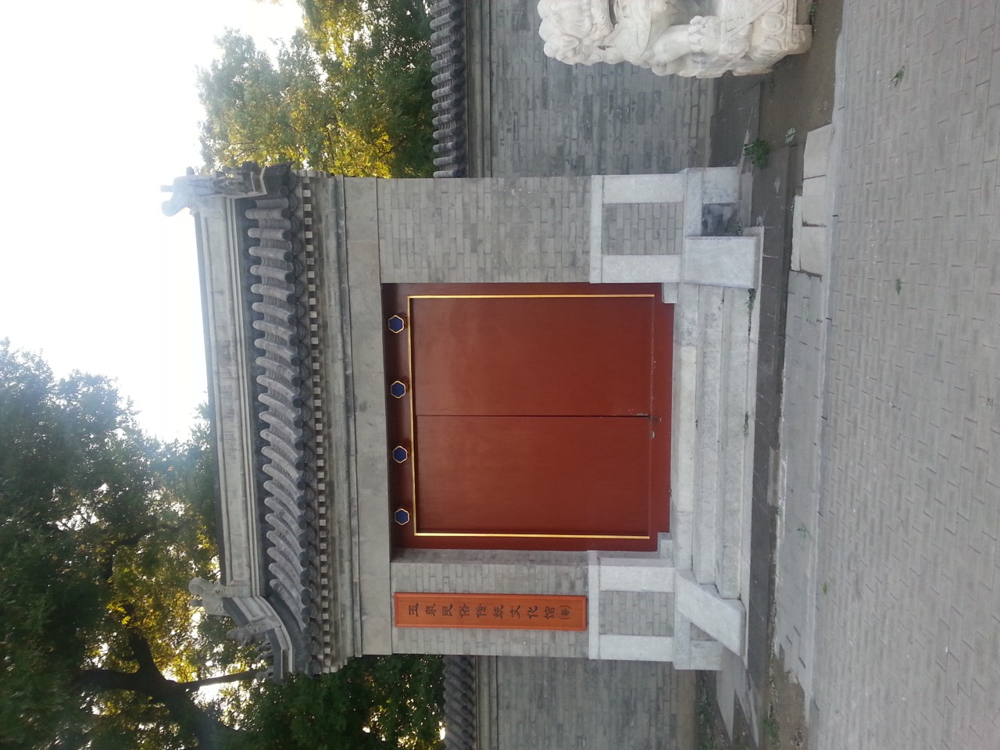
作品：北坞公园.jpg
摄影：Antigng
拍摄日期（来源声明）：2015-06-30
2015年北坞公园历史影像，主体为园内建筑；不代表场所全貌、现行陈列、季节或开放状态。
由来源原图等比例缩小，并进行JPEG压缩（质量参数72）；未裁切、重绘、去人物或换背景。成品为960×1280。页面按容器缩放、裁显；完整原图见来源。
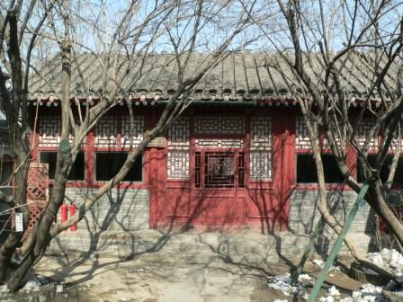
作品：Luxunguju zhengfang.JPG
摄影：The original uploader was 用心阁 at Chinese Wikipedia .
拍摄日期（来源声明）：2005-02-28
2005年北京鲁迅博物馆（鲁迅馆区）历史影像，主体为鲁迅故居庭院和正房；不代表场所全貌、现行陈列、季节或开放状态。
保留来源原图文件，未放大、裁切、重绘或换背景。成品为448×336。页面按容器缩放、裁显；完整原图见来源。
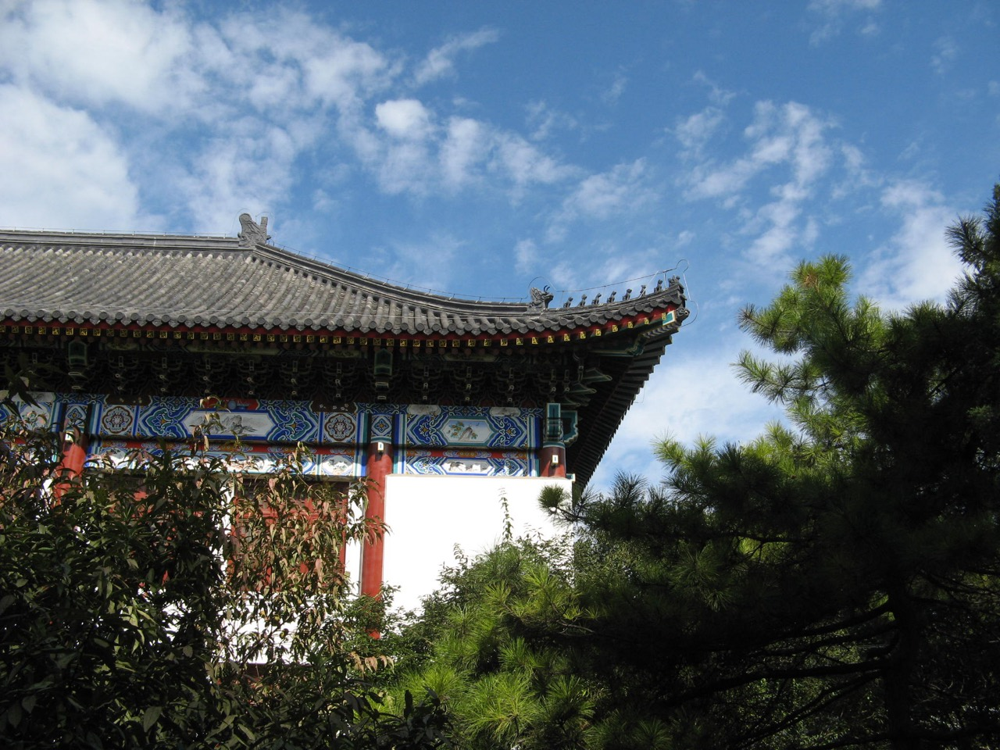
作品：Arthur M. Sackler Museum, Peking University.JPG
摄影：如沐西风
拍摄日期（来源声明）：2013-09-24
2013年北京大学赛克勒考古与艺术博物馆历史影像，主体为馆舍外观；不代表场所全貌、现行陈列、季节或开放状态。
由来源原图等比例缩小，并进行JPEG压缩（质量参数72）；未裁切、重绘、去人物或换背景。成品为1280×960。页面按容器缩放、裁显；完整原图见来源。
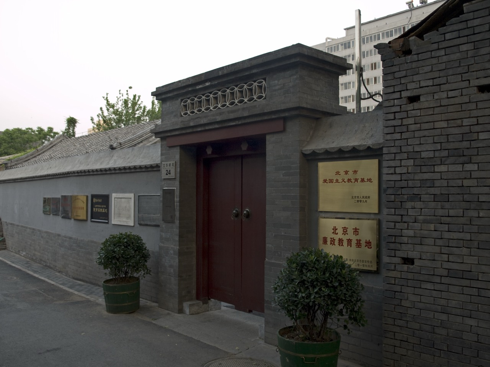
作品：Xhutong01st.jpg
摄影：Yaroslav Blanter
拍摄日期（来源声明）：2010-05-22
2010年北京李大钊故居历史影像，主体为故居局部；不代表场所全貌、现行陈列、季节或开放状态。
由来源原图等比例缩小，并进行JPEG压缩（质量参数72）；未裁切、重绘、去人物或换背景。成品为1280×960。页面按容器缩放、裁显；完整原图见来源。
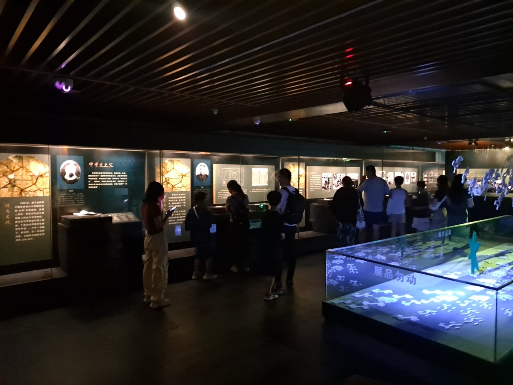
作品：国家典籍博物馆 4.jpg
摄影：EditQ
拍摄日期（来源声明）：2023-07-29
2023年国家典籍博物馆历史影像，主体为馆内局部；不代表场所全貌、现行陈列、季节或开放状态。
由来源原图等比例缩小，并进行JPEG压缩（质量参数72）；未裁切、重绘、去人物或换背景。成品为1280×960。页面按容器缩放、裁显；完整原图见来源。
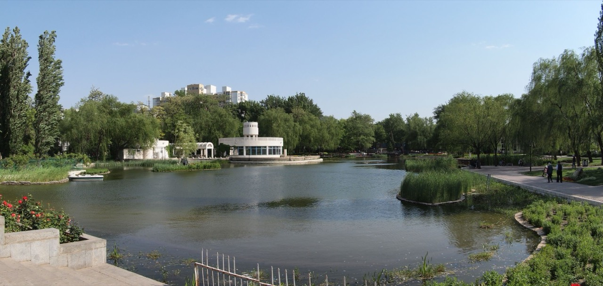
作品：人定湖公园 - Rendinghu Park - 2011.05 - panoramio.jpg
摄影：rheins
拍摄日期（来源声明）：2011-05-13
2011年人定湖公园历史影像，主体为园区局部；不代表场所全貌、现行陈列、季节或开放状态。
由来源原图等比例缩小，并进行JPEG压缩（质量参数72）；未裁切、重绘、去人物或换背景。成品为1280×608。页面按容器缩放、裁显；完整原图见来源。
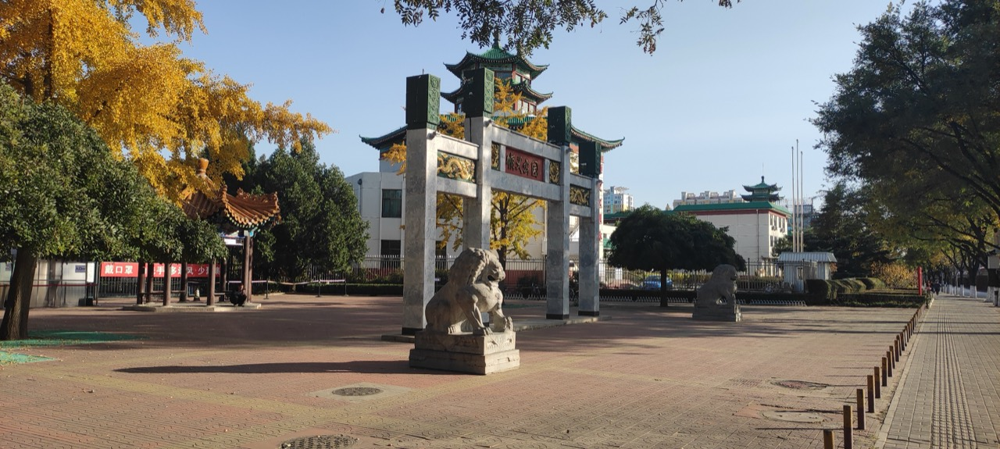
作品：北京顺义公园.jpg
摄影：热血小亮
拍摄日期（来源声明）：2020-11-01
2020年顺义公园历史影像，主体为园区局部；不代表场所全貌、现行陈列、季节或开放状态。
由来源原图等比例缩小，并进行JPEG压缩（质量参数72）；未裁切、重绘、去人物或换背景。成品为1280×575。页面按容器缩放、裁显；完整原图见来源。
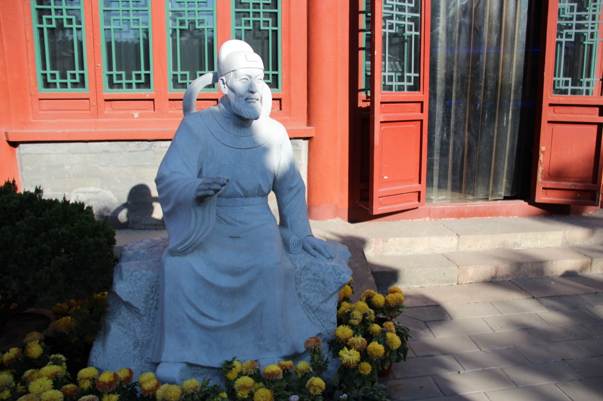
作品：郭守敬纪念馆 - panoramio.jpg
摄影：caoyadong
拍摄日期（来源声明）：2011-11-13
2011年郭守敬纪念馆历史影像，主体为汇通祠馆区局部；不代表场所全貌、现行陈列、季节或开放状态。
由来源原图等比例缩小，并进行JPEG压缩（质量参数72）；未裁切、重绘、去人物或换背景。成品为1280×853。页面按容器缩放、裁显；完整原图见来源。
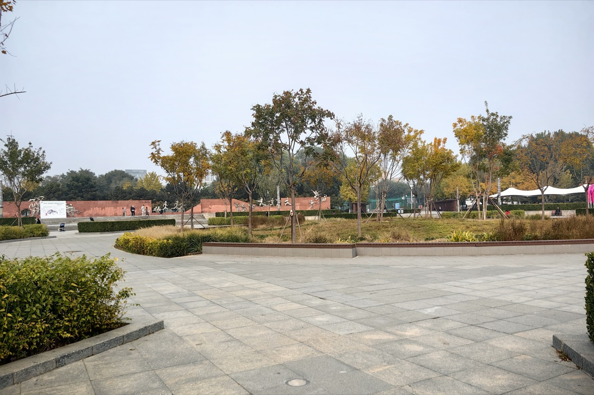
作品：永安公园 20251029 141622.jpg
摄影：Auongkinghe
拍摄日期（来源声明）：2025-10-29
2025年永安公园历史影像，主体为昌平永安公园局部；不代表场所全貌、现行陈列、季节或开放状态。
由来源原图等比例缩小，并进行JPEG压缩（质量参数72）；未裁切、重绘、去人物或换背景。成品为1280×853。页面按容器缩放、裁显；完整原图见来源。
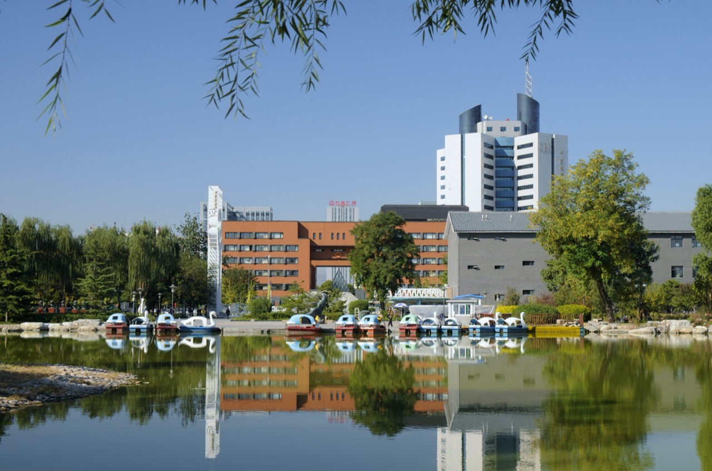
作品：城市雕塑公园 - panoramio.jpg
摄影：mayanming
拍摄日期（来源声明）：2011-10-17
2011年北京国际雕塑公园历史影像，主体为园内局部；不代表场所全貌、现行陈列、季节或开放状态。
由来源原图等比例缩小，并进行JPEG压缩（质量参数72）；未裁切、重绘、去人物或换背景。成品为1280×847。页面按容器缩放、裁显；完整原图见来源。
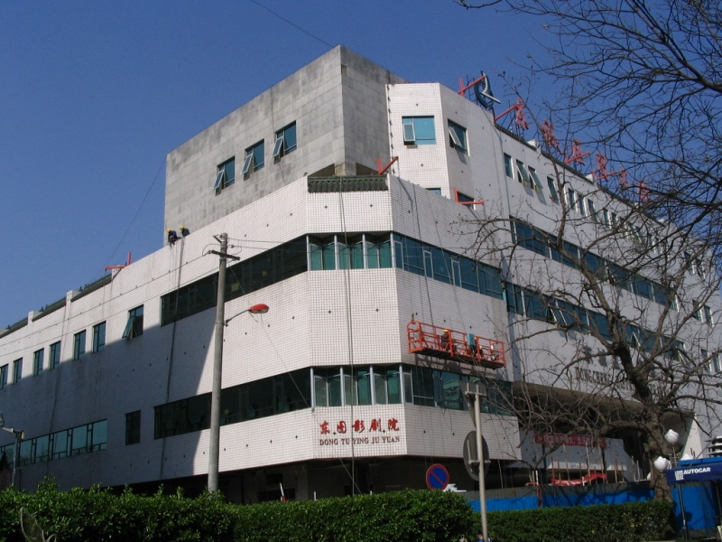
作品：东城区图书馆 - panoramio.jpg
摄影：京城帅哥
拍摄日期（来源声明）：2008-04-13
2008年东城区图书馆历史影像，主体为馆舍外观；不代表场所全貌、现行陈列、季节或开放状态。
保留来源原图文件，未放大、裁切、重绘或换背景。成品为800×600。页面按容器缩放、裁显；完整原图见来源。
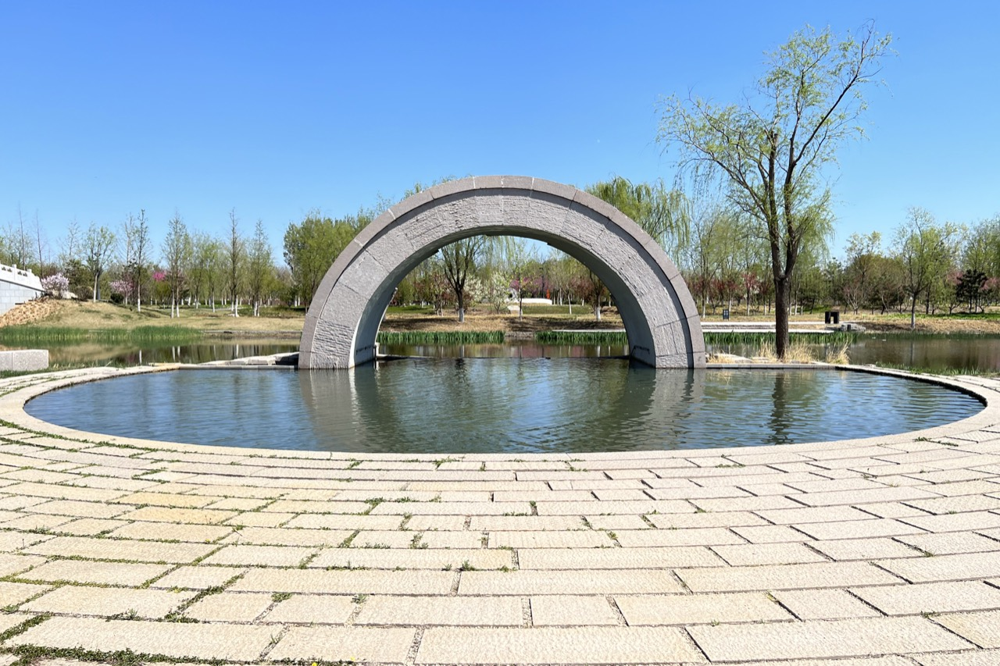
作品：Central Green (20220415132657).jpg
摄影：N509FZ
拍摄日期（来源声明）：2022-04-15
2022年城市绿心森林公园历史影像，主体为园内景观；不代表场所全貌、现行陈列、季节或开放状态。
由来源原图等比例缩小，并进行JPEG压缩（质量参数72）；未裁切、重绘、去人物或换背景。成品为1280×853。页面按容器缩放、裁显；完整原图见来源。
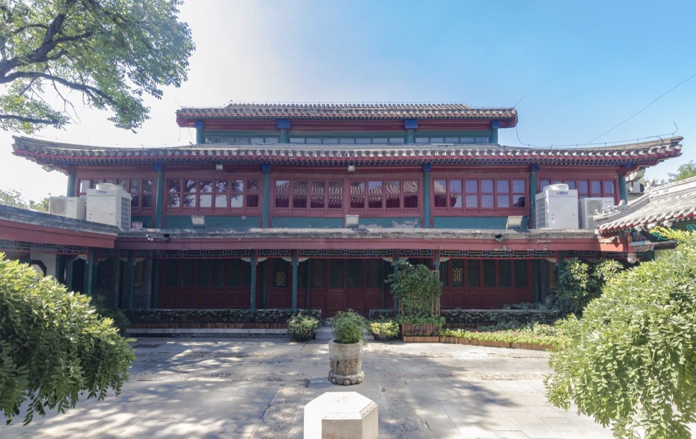
作品：湖广会馆戏楼外部2019.jpg
摄影：ScareCriterion12
拍摄日期（来源声明）：2019-06-14
2019年北京戏曲博物馆历史影像，主体为湖广会馆戏楼外观；不代表场所全貌、现行陈列、季节或开放状态。
由来源原图等比例缩小，并进行JPEG压缩（质量参数72）；未裁切、重绘、去人物或换背景。成品为1280×808。页面按容器缩放、裁显；完整原图见来源。
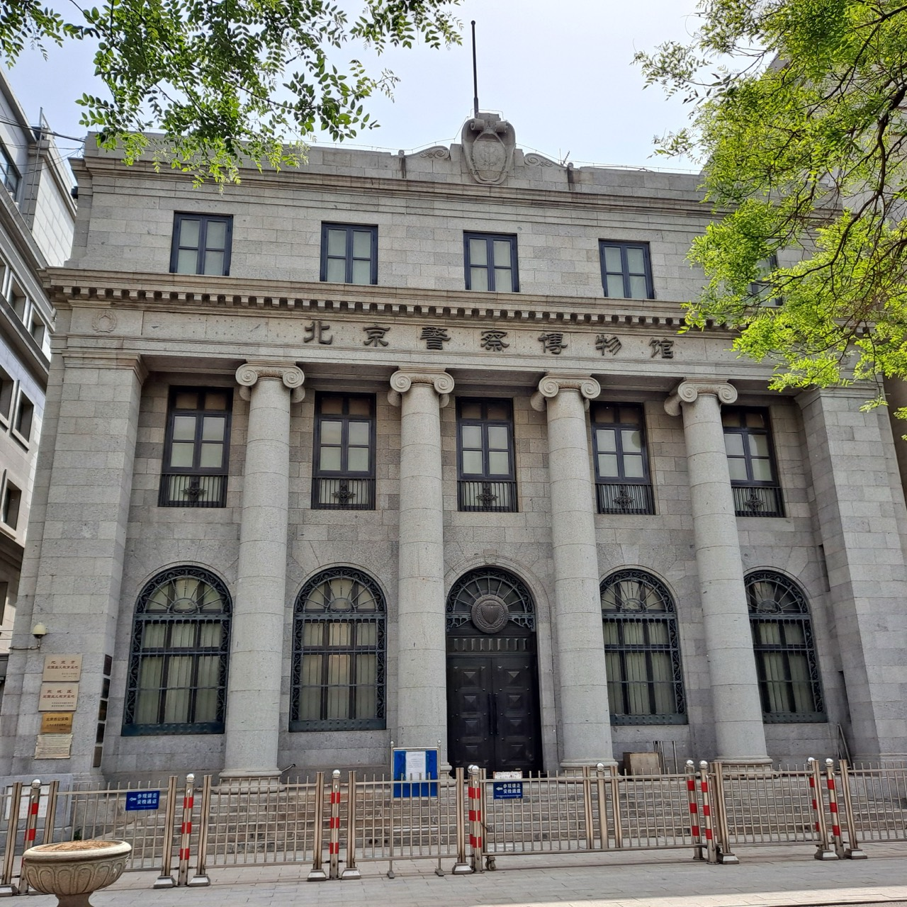
作品：北京警察博物馆.jpg
摄影：EditQ
拍摄日期（来源声明）：2023-04-19
2023年北京警察博物馆历史影像，主体为馆舍外观；不代表场所全貌、现行陈列、季节或开放状态。
由来源原图等比例缩小，并进行JPEG压缩（质量参数72）；未裁切、重绘、去人物或换背景。成品为1280×1280。页面按容器缩放、裁显；完整原图见来源。
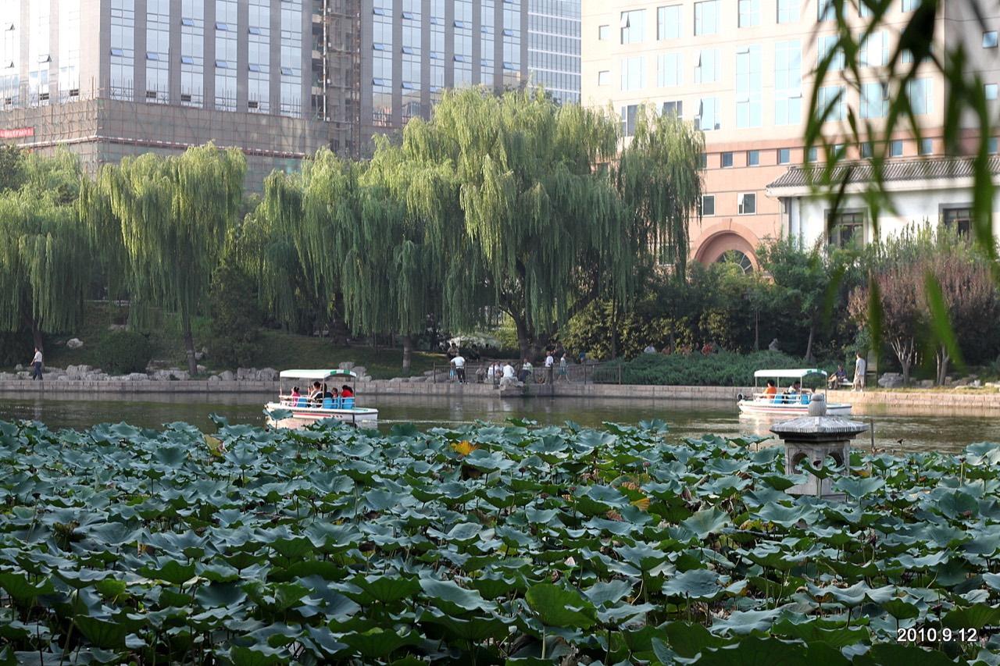
作品：北京团结湖公园 - panoramio - Tiger@西北 (2).jpg
摄影：Tiger@西北
拍摄日期（来源声明）：2010-09-12
2010年团结湖公园历史影像，主体为园内景观；不代表场所全貌、现行陈列、季节或开放状态。
由来源原图等比例缩小，并进行JPEG压缩（质量参数72）；未裁切、重绘、去人物或换背景。成品为1280×853。页面按容器缩放、裁显；完整原图见来源。
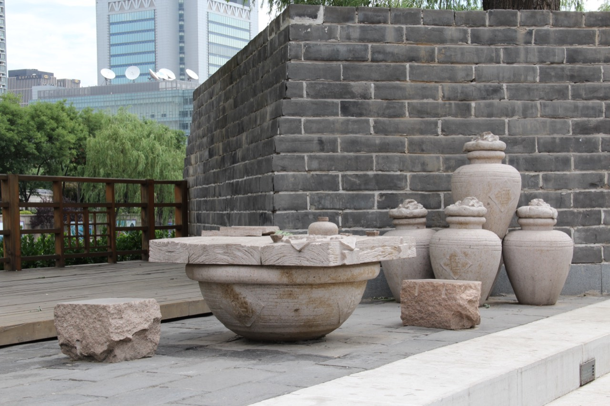
作品：庆丰公园 - panoramio (5).jpg
摄影：caoyadong
拍摄日期（来源声明）：2012-06-10
2012年庆丰公园历史影像，主体为朝阳庆丰公园局部；不代表场所全貌、现行陈列、季节或开放状态。
由来源原图等比例缩小，并进行JPEG压缩（质量参数72）；未裁切、重绘、去人物或换背景。成品为1280×853。页面按容器缩放、裁显；完整原图见来源。
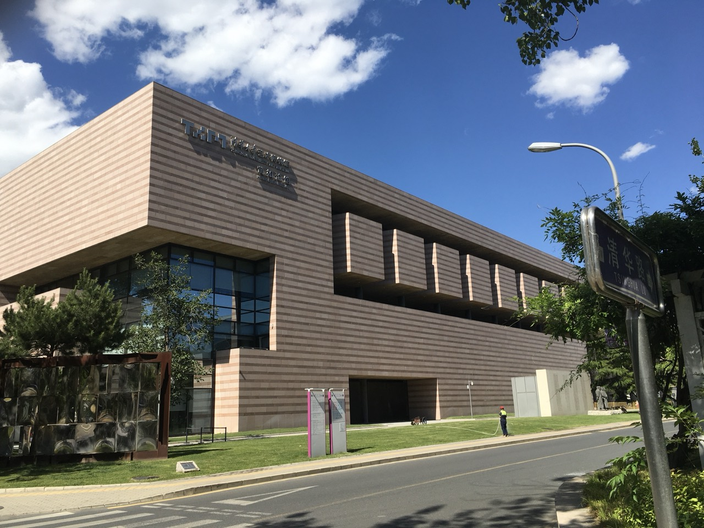
作品：清華大學藝博館.jpg
摄影：葉又嘉
拍摄日期（来源声明）：2021-06-04
2021年清华大学艺术博物馆历史影像，主体为馆舍外观；不代表场所全貌、现行陈列、季节或开放状态。
由来源原图等比例缩小，并进行JPEG压缩（质量参数72）；未裁切、重绘、去人物或换背景。成品为1280×960。页面按容器缩放、裁显；完整原图见来源。
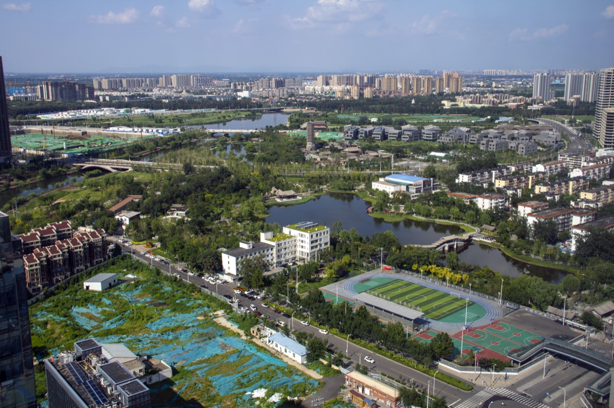
作品：西海子公园 2021.jpg
摄影：維基小霸王
拍摄日期（来源声明）：2021-08-17
2021年西海子公园历史影像，主体为通州西海子公园局部；不代表场所全貌、现行陈列、季节或开放状态。
由来源原图等比例缩小，并进行JPEG压缩（质量参数72）；未裁切、重绘、去人物或换背景。成品为1280×853。页面按容器缩放、裁显；完整原图见来源。
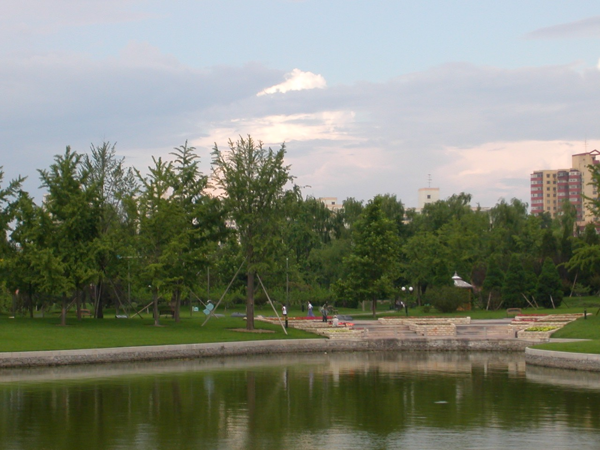
作品：HONG LINGJIN PARK - panoramio.jpg
摄影：Lennon
拍摄日期（来源声明）：2004-07-08
2004年红领巾公园历史影像，主体为园内景观；不代表场所全貌、现行陈列、季节或开放状态。
由来源原图等比例缩小，并进行JPEG压缩（质量参数72）；未裁切、重绘、去人物或换背景。成品为1280×960。页面按容器缩放、裁显；完整原图见来源。
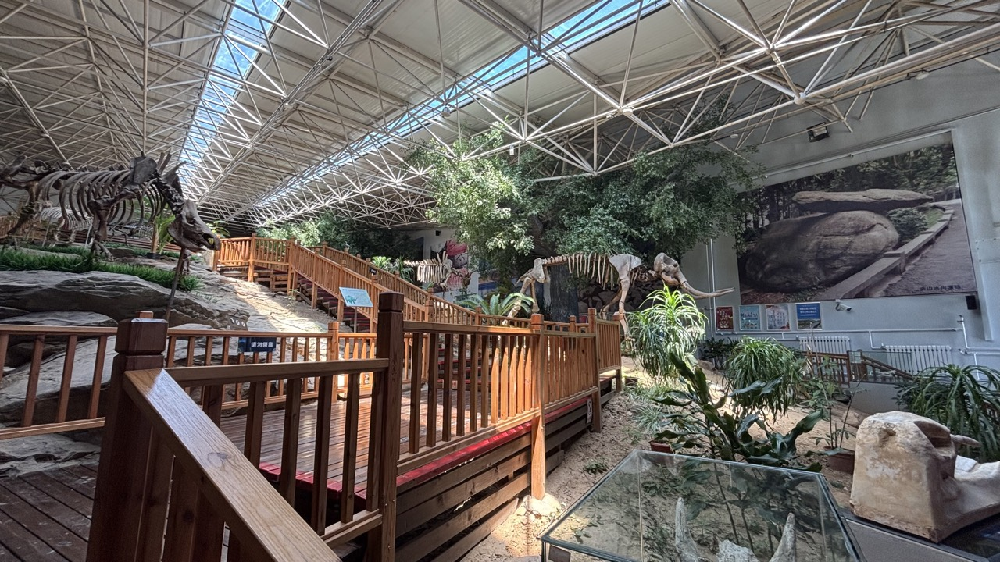
作品：中国第四纪冰川遗迹陈列馆内部.jpg
摄影：Air7538
拍摄日期（来源声明）：2025-06-21
2025年中国第四纪冰川遗迹陈列馆历史影像，主体为馆内遗迹展示；不代表场所全貌、现行陈列、季节或开放状态。
由来源原图等比例缩小，并进行JPEG压缩（质量参数72）；未裁切、重绘、去人物或换背景。成品为1280×720。页面按容器缩放、裁显；完整原图见来源。
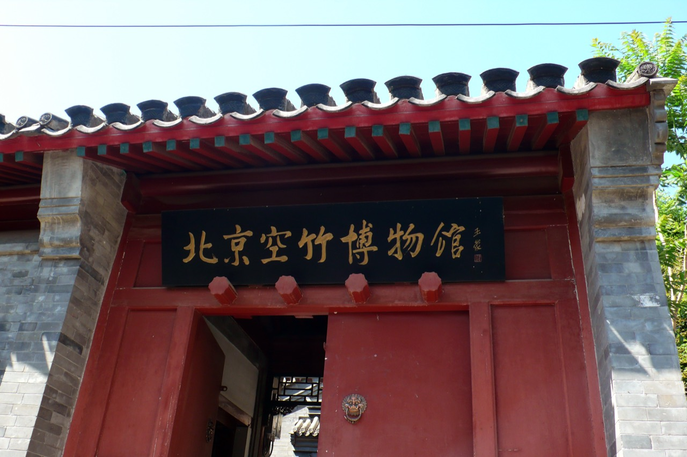
作品：北京空竹博物馆.JPG
摄影：三猎
拍摄日期（来源声明）：2016-05-12
2016年北京空竹博物馆历史影像，主体为馆舍外观；不代表场所全貌、现行陈列、季节或开放状态。
由来源原图等比例缩小，并进行JPEG压缩（质量参数72）；未裁切、重绘、去人物或换背景。成品为1280×852。页面按容器缩放、裁显；完整原图见来源。
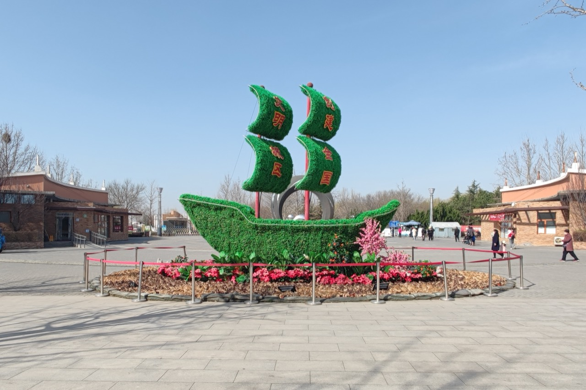
作品：念坛公园102708.jpg
摄影：Adrastuskhai
拍摄日期（来源声明）：2021-03-23
2021年念坛公园历史影像，主体为东门外观；不代表场所全貌、现行陈列、季节或开放状态。
由来源原图等比例缩小，并进行JPEG压缩（质量参数72）；未裁切、重绘、去人物或换背景。成品为1280×853。页面按容器缩放、裁显；完整原图见来源。
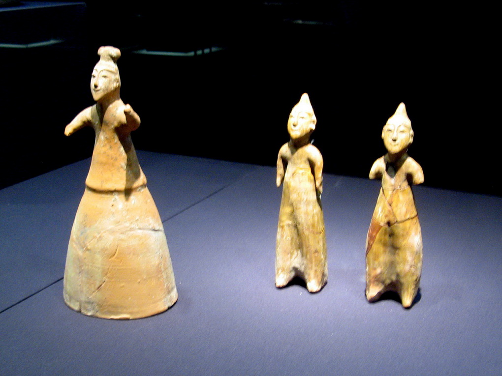
作品：Celadon standing man figure, Haidian Museum, Wei Dynasty.jpg
摄影：如沐西风
拍摄日期（来源声明）：2011-06-24
2011年北京市海淀区博物馆历史影像，主体为馆藏青釉人物俑的历史展陈；不代表场所全貌、现行陈列、季节或开放状态。
保留来源原图文件，未放大、裁切、重绘或换背景。成品为1020×765。页面按容器缩放、裁显；完整原图见来源。
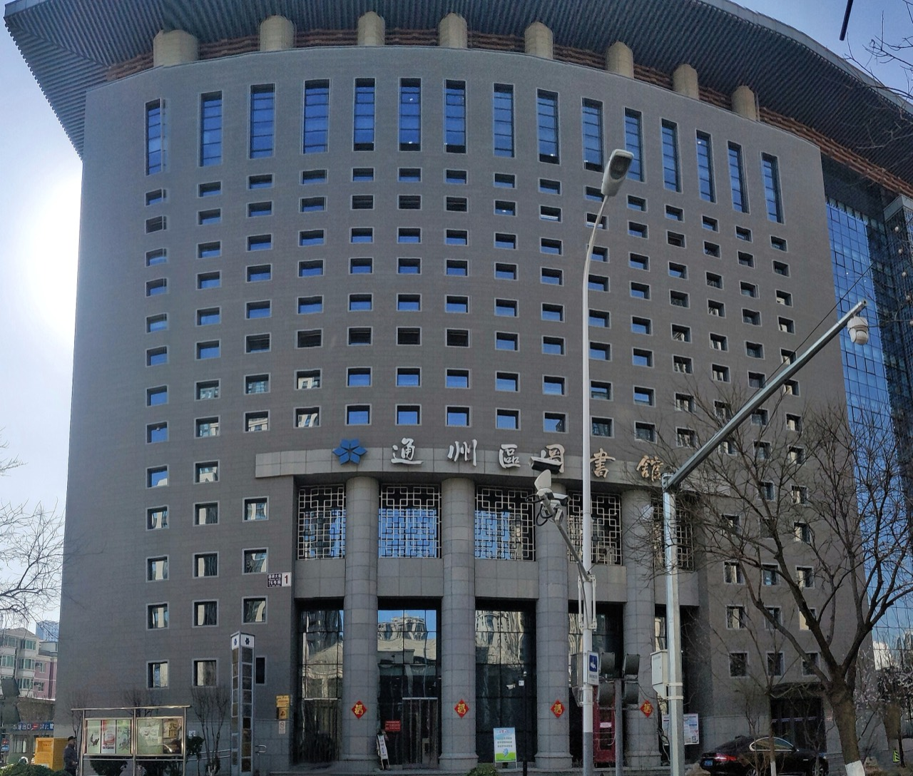
作品：通州区图书馆正面.jpeg
摄影：恒冰
拍摄日期（来源声明）：2019-03-16
2019年通州区图书馆历史影像，主体为馆舍外观；不代表场所全貌、现行陈列、季节或开放状态。
由来源原图等比例缩小，并进行JPEG压缩（质量参数72）；未裁切、重绘、去人物或换背景。成品为1280×1088。页面按容器缩放、裁显；完整原图见来源。
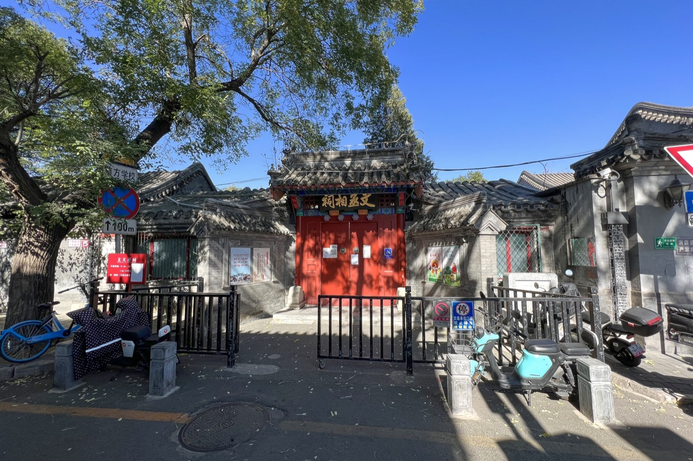
作品：Ancestral Temple for Wen Tianxiang (20221031120711).jpg
摄影：N509FZ
拍摄日期（来源声明）：2022-10-31
2022年文天祥祠历史影像，主体为北京文天祥祠外观；不代表场所全貌、现行陈列、季节或开放状态。
由来源原图等比例缩小，并进行JPEG压缩（质量参数72）；未裁切、重绘、去人物或换背景。成品为1280×853。页面按容器缩放、裁显；完整原图见来源。
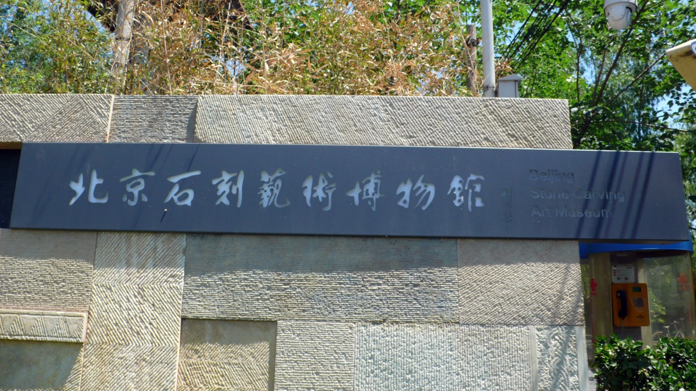
作品：北京石刻艺术博物馆1.jpg
摄影：三猎
拍摄日期（来源声明）：2016-05-26
2016年北京石刻艺术博物馆（五塔寺）历史影像，主体为馆区局部；不代表场所全貌、现行陈列、季节或开放状态。
由来源原图等比例缩小，并进行JPEG压缩（质量参数72）；未裁切、重绘、去人物或换背景。成品为1280×720。页面按容器缩放、裁显；完整原图见来源。
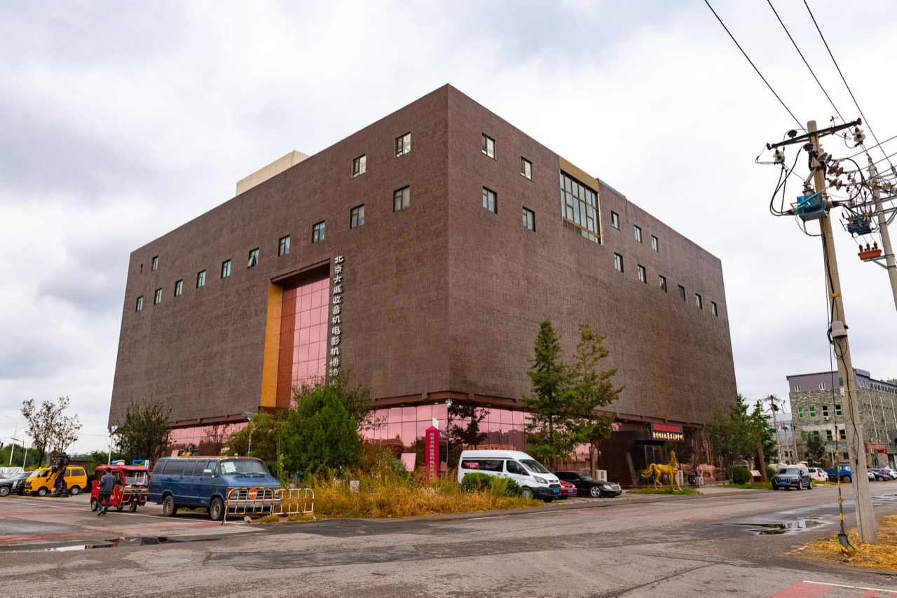
作品：Beijing Daqi Museum for Radios and Movie Projectors (20221002130515).jpg
摄影：N509FZ
拍摄日期（来源声明）：2022-10-02
2022年北京大戚收音机电影机博物馆历史影像，主体为馆舍外观；不代表场所全貌、现行陈列、季节或开放状态。
由来源原图等比例缩小，并进行JPEG压缩（质量参数72）；未裁切、重绘、去人物或换背景。成品为1280×853。页面按容器缩放、裁显；完整原图见来源。
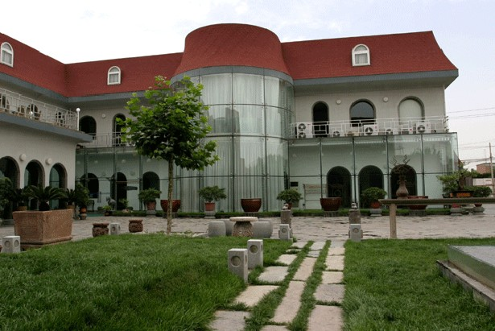
作品：Guanfu Museum.jpg
摄影：NNU-11-ZhangLi
拍摄日期（来源声明）：2011-12-13
2011年观复博物馆历史影像，主体为馆区局部；不代表场所全貌、现行陈列、季节或开放状态。
保留来源原图文件，未放大、裁切、重绘或换背景。成品为615×411。页面按容器缩放、裁显；完整原图见来源。
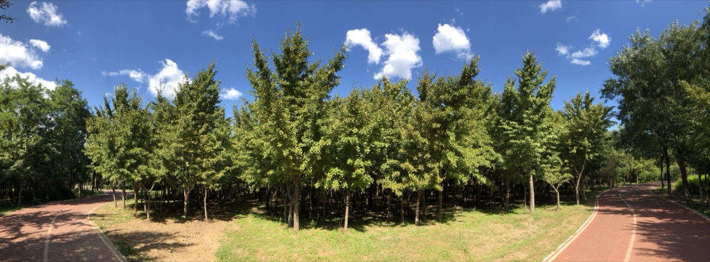
作品：常营公园一段.jpg
摄影：David290
拍摄日期（来源声明）：2018-09-23
2018年常营公园历史影像，主体为园区局部；不代表场所全貌、现行陈列、季节或开放状态。
由来源原图等比例缩小，并进行JPEG压缩（质量参数72）；未裁切、重绘、去人物或换背景。成品为1280×473。页面按容器缩放、裁显；完整原图见来源。
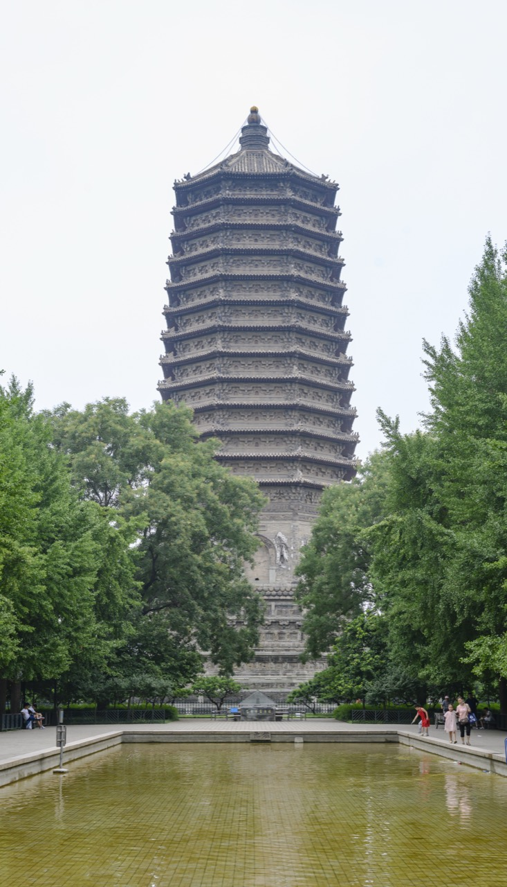
作品：慈寿寺塔2022.8.jpg
摄影：ScareCriterion12
拍摄日期（来源声明）：2022-08-20
2022年玲珑公园历史影像，主体为园内慈寿寺塔；不代表场所全貌、现行陈列、季节或开放状态。
由来源原图等比例缩小，并进行JPEG压缩（质量参数72）；未裁切、重绘、去人物或换背景。成品为733×1280。页面按容器缩放、裁显；完整原图见来源。
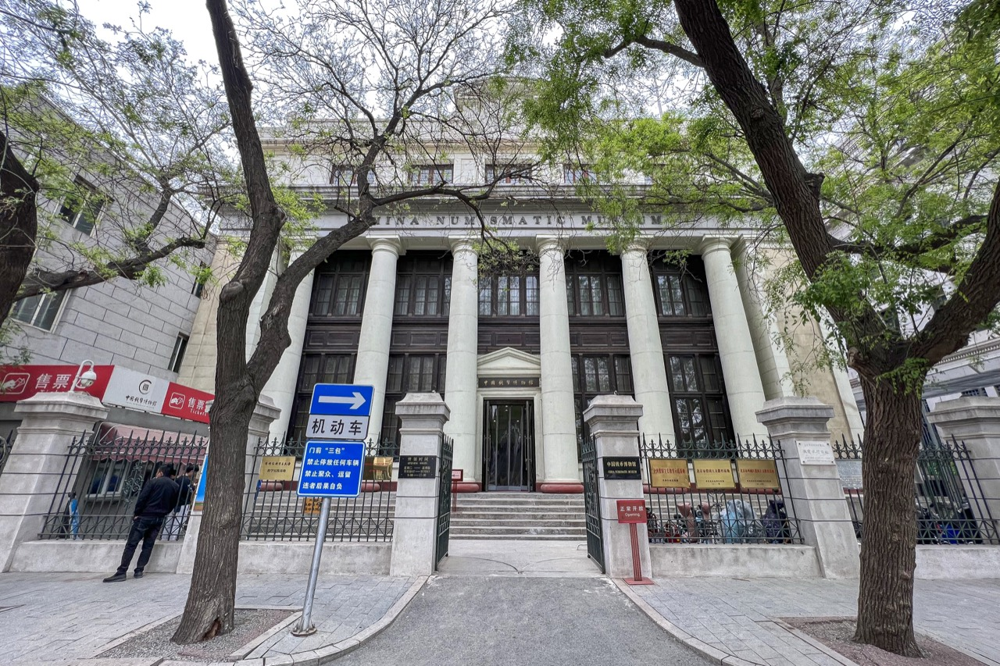
作品：China Numismatic Museum (20230423131153).jpg
摄影：N509FZ
拍摄日期（来源声明）：2023-04-23
2023年中国钱币博物馆历史影像，主体为馆舍外观；不代表场所全貌、现行陈列、季节或开放状态。
由来源原图等比例缩小，并进行JPEG压缩（质量参数72）；未裁切、重绘、去人物或换背景。成品为1280×853。页面按容器缩放、裁显；完整原图见来源。
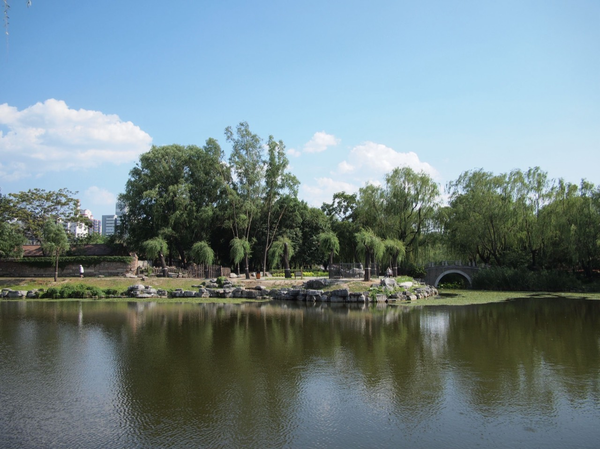
作品：柳荫公园 - Liuyin Park - 2011.06 - panoramio.jpg
摄影：rheins
拍摄日期（来源声明）：2011-06-08
2011年柳荫公园历史影像，主体为园内景观；不代表场所全貌、现行陈列、季节或开放状态。
由来源原图等比例缩小，并进行JPEG压缩（质量参数72）；未裁切、重绘、去人物或换背景。成品为1280×959。页面按容器缩放、裁显；完整原图见来源。
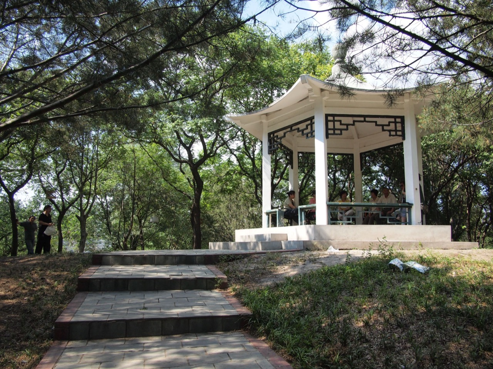
作品：青年湖公园- -Qingnianhu Park - 2011.06 - panoramio.jpg
摄影：rheins
拍摄日期（来源声明）：2011-06-08
2011年青年湖公园历史影像，主体为园内景观；不代表场所全貌、现行陈列、季节或开放状态。
由来源原图等比例缩小，并进行JPEG压缩（质量参数72）；未裁切、重绘、去人物或换背景。成品为1280×959。页面按容器缩放、裁显；完整原图见来源。
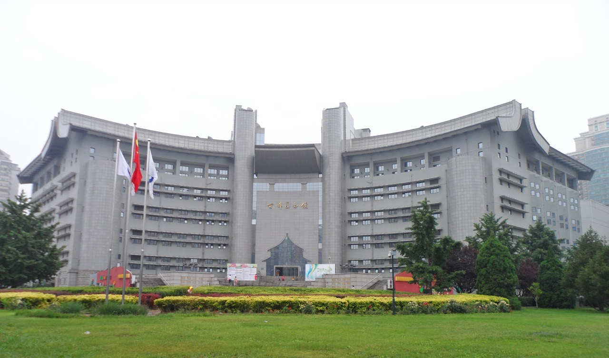
作品：Capital Library of China.JPG
摄影：螺钉
拍摄日期（来源声明）：2015-06-15
2015年首都图书馆历史影像，主体为馆舍外观；不代表场所全貌、现行陈列、季节或开放状态。
由来源原图等比例缩小，并进行JPEG压缩（质量参数72）；未裁切、重绘、去人物或换背景。成品为1280×753。页面按容器缩放、裁显；完整原图见来源。
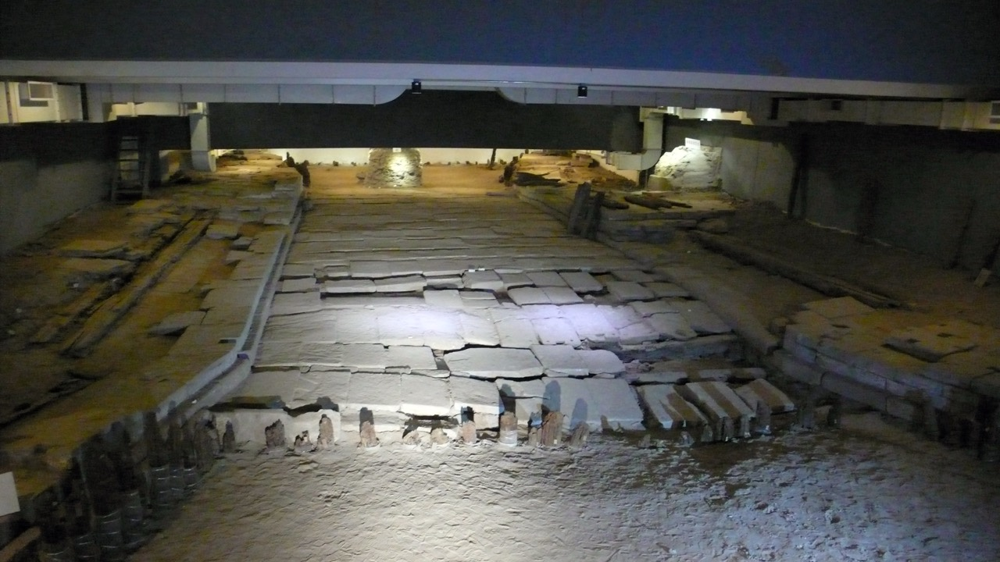
作品：金中都水关遗址.JPG
摄影：三猎
拍摄日期（来源声明）：2016-05-12
2016年金中都水关遗址历史影像，主体为馆内水关遗址；不代表场所全貌、现行陈列、季节或开放状态。
由来源原图等比例缩小，并进行JPEG压缩（质量参数72）；未裁切、重绘、去人物或换背景。成品为1280×720。页面按容器缩放、裁显；完整原图见来源。
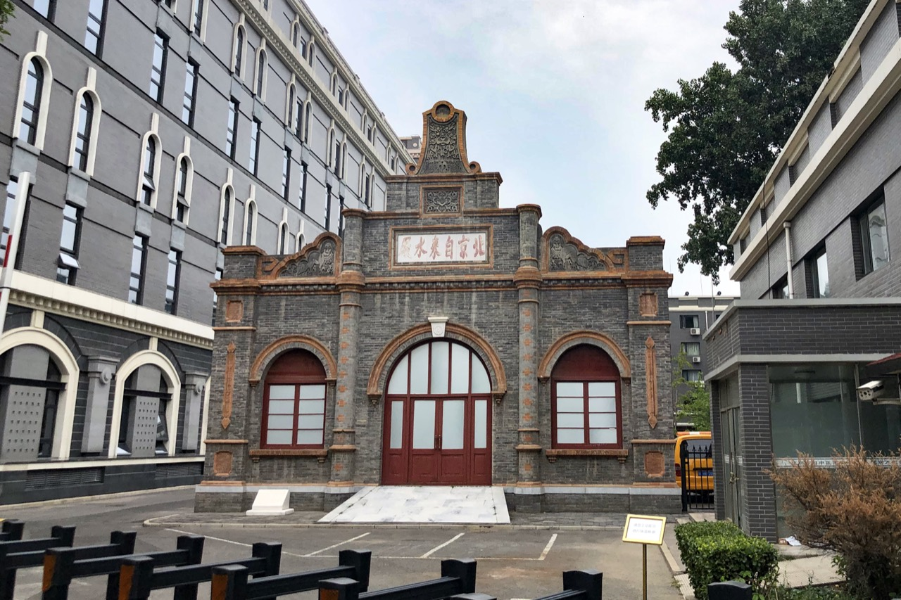
作品：Site of Beijing Waterworks at Dongzhimen (20200628142521).jpg
摄影：N509FZ
拍摄日期（来源声明）：2020-06-28
2020年北京自来水博物馆历史影像，主体为自来水厂旧址局部；不代表场所全貌、现行陈列、季节或开放状态。
由来源原图等比例缩小，并进行JPEG压缩（质量参数72）；未裁切、重绘、去人物或换背景。成品为1280×853。页面按容器缩放、裁显；完整原图见来源。
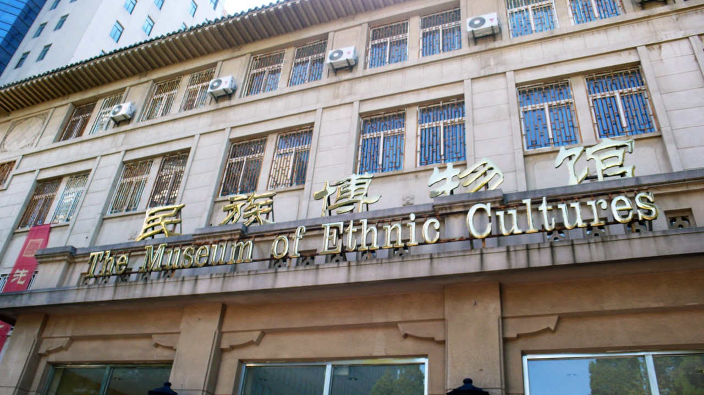
作品：民大民族博物馆.jpg
摄影：三猎
拍摄日期（来源声明）：2016-05-16
2016年中央民族大学民族博物馆历史影像，主体为馆舍外观；不代表场所全貌、现行陈列、季节或开放状态。
由来源原图等比例缩小，并进行JPEG压缩（质量参数72）；未裁切、重绘、去人物或换背景。成品为1280×720。页面按容器缩放、裁显；完整原图见来源。
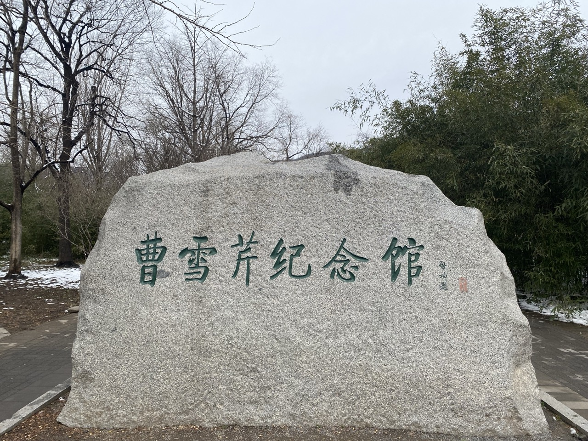
作品：曹雪芹纪念馆-1.jpg
摄影：Suiyuanjiuyou
拍摄日期（来源声明）：2022-03-21
2022年曹雪芹纪念馆历史影像，主体为北京曹雪芹纪念馆局部；不代表场所全貌、现行陈列、季节或开放状态。
由来源原图等比例缩小，并进行JPEG压缩（质量参数72）；未裁切、重绘、去人物或换背景。成品为1280×960。页面按容器缩放、裁显；完整原图见来源。
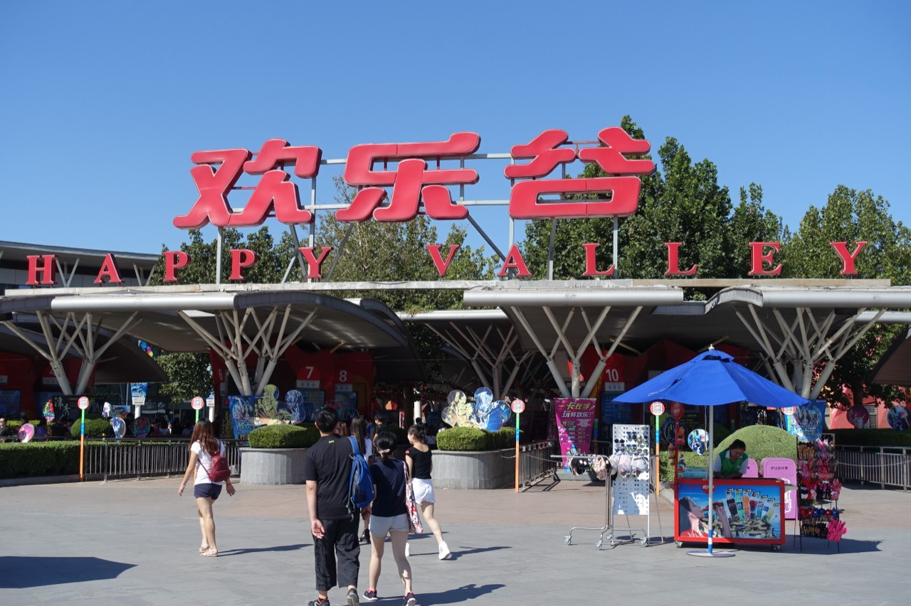
作品：Happy Valley Beijing (5).jpg
摄影：Jeremy Thompson
拍摄日期（来源声明）：2016-08-30
2016年北京欢乐谷历史影像，主体为入口外观；不代表场所全貌、现行陈列、季节或开放状态。
由来源原图等比例缩小，并进行JPEG压缩（质量参数72）；未裁切、重绘、去人物或换背景。成品为1280×853。页面按容器缩放、裁显；完整原图见来源。
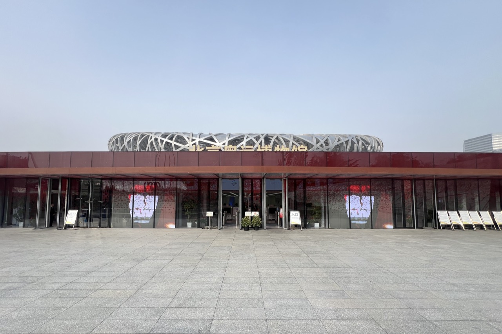
作品：Entrance of Beijing Olympic Museum (20261115141927).jpg
摄影：N509FZ
拍摄日期（来源声明）：2026-11-15
2026年北京奥运博物馆历史影像，主体为入口外观；不代表场所全貌、现行陈列、季节或开放状态。
由来源原图等比例缩小，并进行JPEG压缩（质量参数72）；未裁切、重绘、去人物或换背景。成品为1280×853。页面按容器缩放、裁显；完整原图见来源。
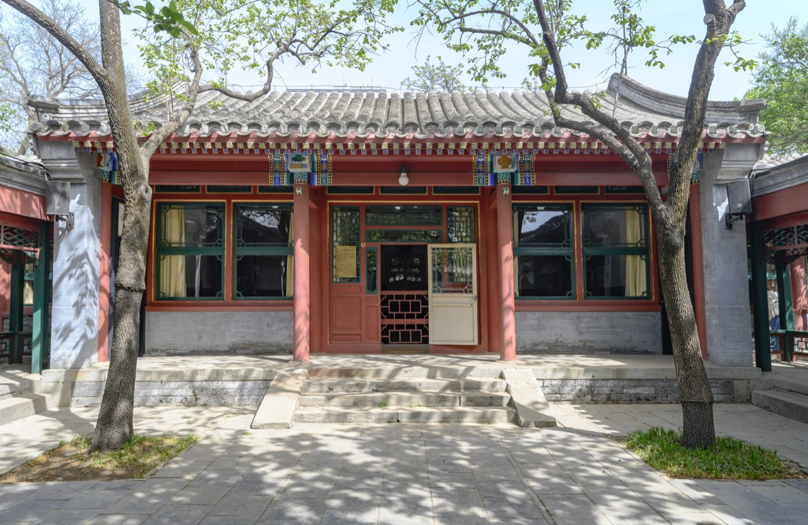
作品：北京梅兰芳故居正房2023.4 (2).jpg
摄影：ScareCriterion12
拍摄日期（来源声明）：2023-04-15
2023年梅兰芳纪念馆历史影像，主体为北京梅兰芳故居正房；不代表场所全貌、现行陈列、季节或开放状态。
由来源原图等比例缩小，并进行JPEG压缩（质量参数72）；未裁切、重绘、去人物或换背景。成品为1280×832。页面按容器缩放、裁显；完整原图见来源。
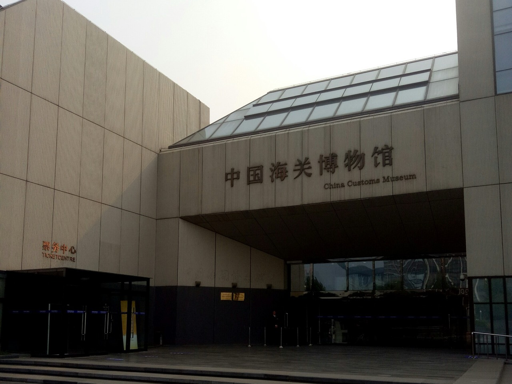
作品：中国海关博物馆1.jpg
摄影：Jared-li
拍摄日期（来源声明）：2016-10-01
2016年中国海关博物馆历史影像，主体为主入口外观；不代表场所全貌、现行陈列、季节或开放状态。
由来源原图等比例缩小，并进行JPEG压缩（质量参数72）；未裁切、重绘、去人物或换背景。成品为1280×960。页面按容器缩放、裁显；完整原图见来源。
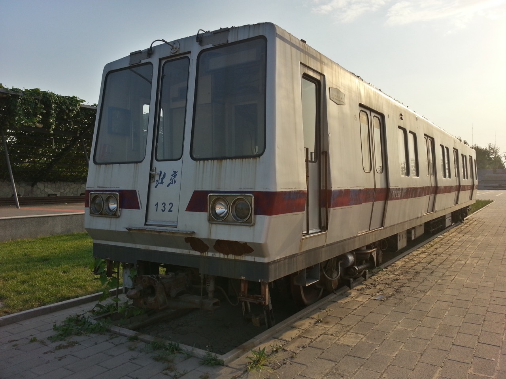
作品：T1326 train in Beijing Subway Culture Park 1.jpg
摄影：Siyuwj
拍摄日期（来源声明）：2013-09-01
2013年地铁文化公园历史影像，主体为园内T1326地铁列车展示；不代表场所全貌、现行陈列、季节或开放状态。
由来源原图等比例缩小，并进行JPEG压缩（质量参数72）；未裁切、重绘、去人物或换背景。成品为1280×960。页面按容器缩放、裁显；完整原图见来源。
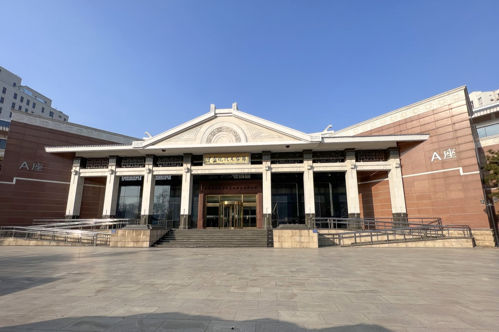
作品：National Museum of Modern Chinese Literature, Block A (20230215151804).jpg
摄影：N509FZ
拍摄日期（来源声明）：2023-02-15
2023年中国现代文学馆历史影像，主体为A座外观；不代表场所全貌、现行陈列、季节或开放状态。
由来源原图等比例缩小，并进行JPEG压缩（质量参数72）；未裁切、重绘、去人物或换背景。成品为1280×853。页面按容器缩放、裁显；完整原图见来源。
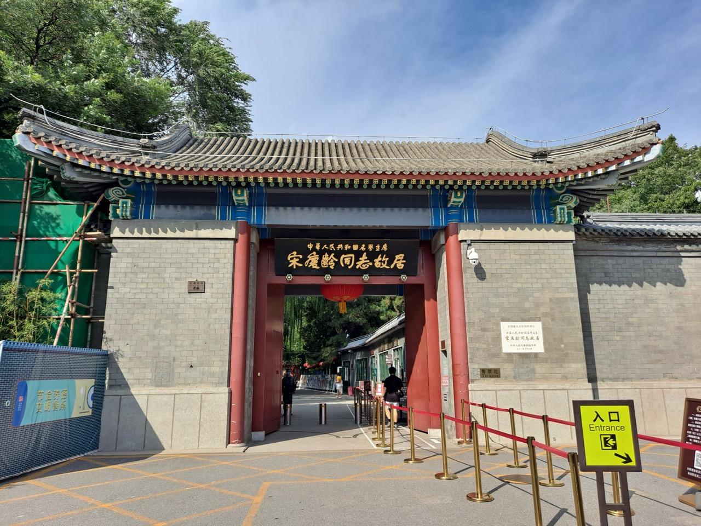
作品：Former Residence of Soong Ching-ling, Beijing 1.jpg
摄影：EditQ
拍摄日期（来源声明）：2023-08-30
2023年宋庆龄同志故居历史影像，主体为北京故居局部；不代表场所全貌、现行陈列、季节或开放状态。
由来源原图等比例缩小，并进行JPEG压缩（质量参数72）；未裁切、重绘、去人物或换背景。成品为1280×960。页面按容器缩放、裁显；完整原图见来源。
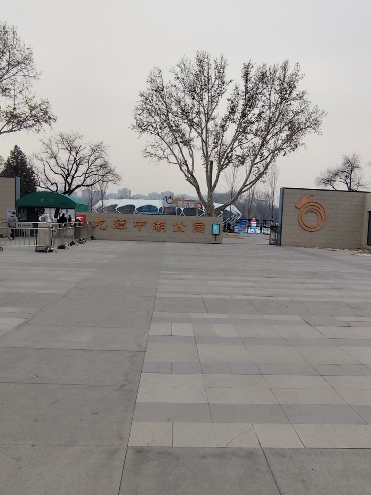
作品：龙潭中湖公园.jpg
摄影：Luoniya
拍摄日期（来源声明）：2024
2024年龙潭中湖公园历史影像，主体为入口外观；不代表场所全貌、现行陈列、季节或开放状态。
由来源原图等比例缩小，并进行JPEG压缩（质量参数72）；未裁切、重绘、去人物或换背景。成品为961×1280。页面按容器缩放、裁显；完整原图见来源。
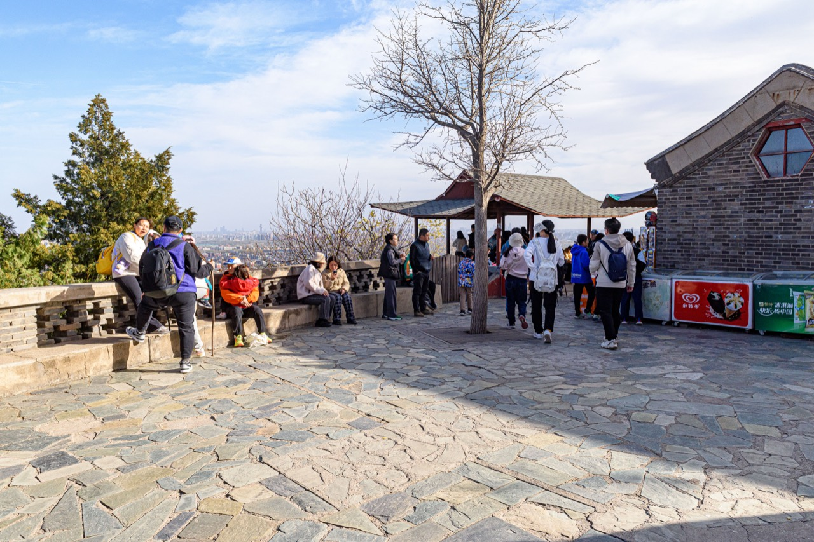
作品：Peak square of Baiwangshan (20241116140235).jpg
摄影：N509FZ
拍摄日期（来源声明）：2024-11-16
2024年百望山森林公园历史影像，主体为山顶广场；不代表场所全貌、现行陈列、季节或开放状态。
由来源原图等比例缩小，并进行JPEG压缩（质量参数72）；未裁切、重绘、去人物或换背景。成品为1280×853。页面按容器缩放、裁显；完整原图见来源。
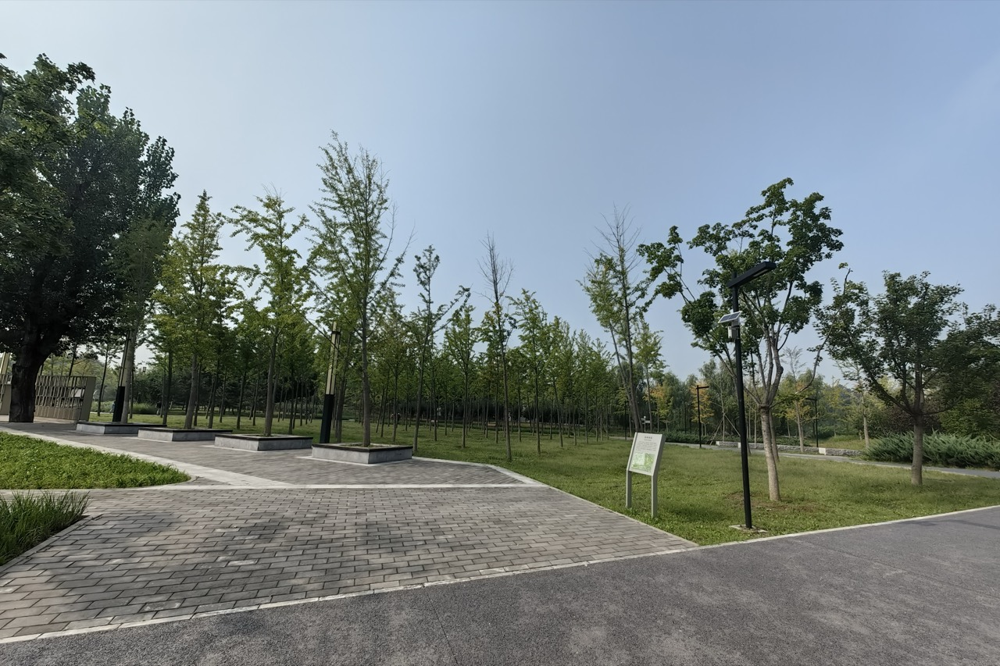
作品：贺新公园 20250913 101831 秋林绚彩.jpg
摄影：Auongkinghe
拍摄日期（来源声明）：2025-09-13
2025年贺新公园历史影像，主体为秋林景观；不代表场所全貌、现行陈列、季节或开放状态。
由来源原图等比例缩小，并进行JPEG压缩（质量参数72）；未裁切、重绘、去人物或换背景。成品为1280×853。页面按容器缩放、裁显；完整原图见来源。
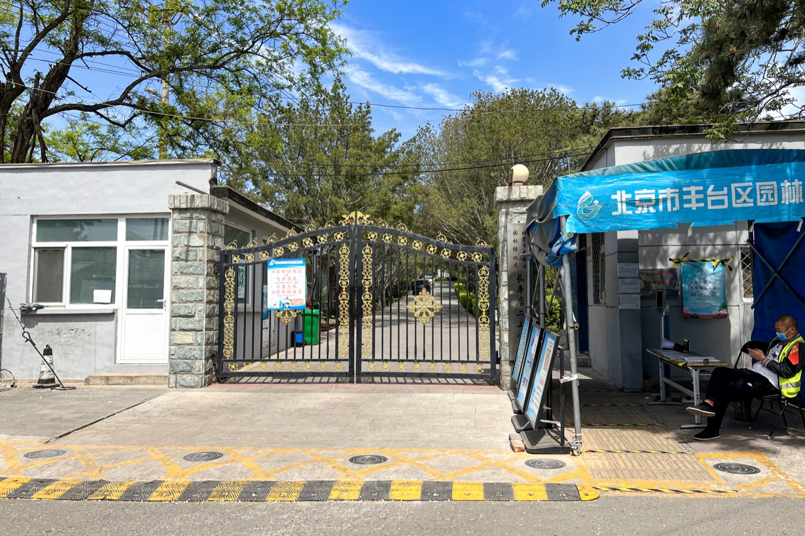
作品：South gate of Changxindian Erqi Park (20220422122452).jpg
摄影：N509FZ
拍摄日期（来源声明）：2022-04-22
2022年长辛店二七公园历史影像，主体为南门外观；不代表场所全貌、现行陈列、季节或开放状态。
由来源原图等比例缩小，并进行JPEG压缩（质量参数72）；未裁切、重绘、去人物或换背景。成品为1280×853。页面按容器缩放、裁显；完整原图见来源。
作品：Overseas Chinese History Museum of China (20260905165056).jpg
摄影：N509FZ
拍摄日期（来源声明）：2026-09-05
2026年中国华侨历史博物馆历史影像，主体为馆舍外观；不代表场所全貌、现行陈列、季节或开放状态。
由来源原图等比例缩小，并进行JPEG压缩（质量参数72）；未裁切、重绘、去人物或换背景。成品为1280×853。页面按容器缩放、裁显；完整原图见来源。
作品：逸步桥 20251028 143038.jpg
摄影：Auongkinghe
拍摄日期（来源声明）：2025-10-28
2025年昌平公园历史影像，主体为逸步桥；不代表场所全貌、现行陈列、季节或开放状态。
由来源原图等比例缩小，并进行JPEG压缩（质量参数72）；未裁切、重绘、去人物或换背景。成品为1280×853。页面按容器缩放、裁显；完整原图见来源。
作品：Gate of Beijing Xishan National Forest Park (20230220143150).jpg
摄影：N509FZ
拍摄日期（来源声明）：2023-02-20
2023年北京西山国家森林公园历史影像，主体为入口外观；不代表场所全貌、现行陈列、季节或开放状态。
由来源原图等比例缩小，并进行JPEG压缩（质量参数72）；未裁切、重绘、去人物或换背景。成品为1280×853。页面按容器缩放、裁显；完整原图见来源。
作品：South gate of Shijingshan Amusement Park (20210503174148).jpg
摄影：N509FZ
拍摄日期（来源声明）：2021-05-03
2021年北京石景山游乐园历史影像，主体为南门外观；不代表场所全貌、现行陈列、季节或开放状态。
由来源原图等比例缩小，并进行JPEG压缩（质量参数72）；未裁切、重绘、去人物或换背景。成品为1280×853。页面按容器缩放、裁显；完整原图见来源。
作品：通州博物馆.jpg
摄影：維基小霸王
拍摄日期（来源声明）：2021-01-03
2021年通州区博物馆历史影像，主体为通州博物馆馆舍外观；不代表场所全貌、现行陈列、季节或开放状态。
由来源原图等比例缩小，并进行JPEG压缩（质量参数72）；未裁切、重绘、去人物或换背景。成品为1280×853。页面按容器缩放、裁显；完整原图见来源。


.jpg){kind=link}


.jpg){kind=link}
.jpg){kind=link}


.jpg){kind=link}

.jpg){kind=link}


.jpg){kind=link}


.jpg){kind=link}


.jpg){kind=link}
.jpg){kind=link}
.jpg){kind=link}


.jpg){kind=link}


.jpg){kind=link}

.jpg){kind=link}
.jpg){kind=link}

.jpg){kind=link}
.jpg){kind=link}